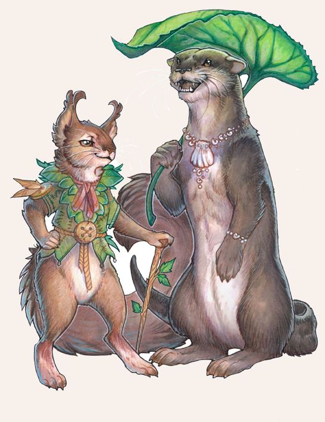

Biestinger sind Feenwesen mit tierischer Gestalt. Sie beherrschen sowohl die menschliche Sprachen als auch die anderer Kulturschaffender in ihrer Heimatregion und auch ihre Intelligenz ist mit der eines Menschen vergleichbar. Sie sind oft verspielt und schelmisch, doch ihre genauen Wesenszüge sind sehr verschieden. Allen ist gemein, dass sie sich nicht verwandeln können, ihre tierische Gestalt ist Teil ihres Wesens. Biestinger haben oft die Gestalt eines kleinen Pelztieres wie Streifenhörnchen, Mäuse oder Otter. Doch auch größere Tiere wie Dachse und Biber oder Wassertiere wie Frösche, Forellen und andere Fische wurden bereits gesichtet. Doch gleich welche Gestalt, gefährliche oder gar aggressive Tiere sind es nie. Viele Aventurier kennen sprechende intelligente Tiere, die helfen oder Streiche spielen, aus Erzählungen und Sagen. Nicht bei allen diesen Märchenfiguren muss es sich um Biestinger handeln. Gerade über die Existenz von Biestingern in Haustiergestalt wie Katzen oder Schweinen herrscht Uneinigkeit.

Verbreitung
Biestinger leben nur an Plätzen, an denen es vermehrt Übergänge in Feenwelten gibt.
Da es solche Orte jedoch in ganz Aventurien gibt, sind Biestinger dementsprechend auch auf dem ganzen Kontinent anzutreffen.
Ihre Tiergestalt entspricht dabei den Tieren der Region und Umgebung, in der sie leben.
Besonders häufig gesichtet wurden sie bisher im Bornland, auf und um die Zyklopeninseln und in den Wäldern von Albernia.
Auch in etlichen Feenwelten sollen verschiedengestaltige Biestinger leben.
Lebensweise
Biestinger neigen dazu, besonders verspielt zu sein.
Ein Großteil ihres Tages besteht ihrer tierischen Form gemäß aus Spielen und Spaß.
Sie haben aber auch eine eher menschliche Seite. Auf den Hinterbeinen zu laufen ist für die meisten normal, ebenso die Verwendung der menschlichen Sprache.
Dabei legen einige geschliffene Umgangsformen an den Tag, andere brüllen hingegen wie auf dem Kasernenhof.
Ihr ganzes Verhalten gegenüber Zweibeinern ist generell von Neugier und Spieltrieb geprägt, unabhängig davon, ob die Langbeiner ihre Späße mögen oder nicht.
Üblicherweise leben Biestinger in den Tag hinein, doch wenn Gefahr für ihre Heimat besteht, nutzen sie alle ihre Möglichkeiten, um diese abzuwenden oder zu vertreiben.
Dann kann aus einem niedlichen, sprechenden Eichhörnchen plötzlich eine Eicheln werfende, laut schimpfende Plage werden und aus einem kecken Marder ein Ausrüstungsdieb.
Nahrung in menschlichem Sinne benötigen sie als Feenwesen nicht, einige haben dennoch eine Vorliebe für Möhren, Nüsse, Kekse oder andere Köstlichkeiten entwickelt.
Andere sammeln Dinge, die ihnen gefallen und die sie mit sich herumschleppen oder horten.
Begehrte Sammelobjekte können kuschelig weiche Menschenhaare für ein Schlafnest sein, glitzernder Schmuck oder Gegenstände in entsprechender Größe, die zur menschlichen Seite des jeweiligen Biestingers passen, zum Beispiel ein Degen in Mardergröße.
Viele Biestinger haben Lieblingsplätze, an denen sich beispielsweise Menschen gut beobachten lassen, Orte, die besonders gemütlich sind oder vor schlechtem Wetter schützen.
Teilweise legen sie Nester oder Bauten an wie ihre tierischen Artgenossen.
Anders als viele andere Feenwesen müssen Biestinger nicht regelmäßig in eine Feenwelt zurück, sie sind nur an das Gebiet gebunden, in dem sie leben.
Auch dabei gibt es große individuelle Unterschiede, denn diese Heimat kann viele Quadratmeilen umfassen oder nur ein kleines Wäldchen oder eine Lichtung sein.
Biestinger sind meist keine Einzelgänger, sondern ausgesprochen kontaktfreudig. Zwar treffen Helden vielleicht nur ein einzelnes Exemplar, doch oft gibt es in der Umgebung wenigstens befreundete Tiere oder weitere Biestinger, die nicht von derselben Tierart sein müssen.
Biestinger
Größe: je nach Tier unterschiedlich
Gewicht: je nach Tier unterschiedlich
Eigenschaften:
MU 13
KL 12
IN 15
CH 15
FF 13
GE 15
KO 11
KK 09
LeP: 5-20 (je nach Tierart)
AsP: 40
KaP: -
INI: 14+1W6
SK: 5
ZK: 3
GS: je nach Tier unterschiedlich
AW: 8
Biss, Schlag oder Tritt:
AT: 12
PA: 7
TP: 1W3
RW: kurz
Kleines Steinchen:
FK: 15
TP: 1W2
RW: 1/3/5
RS/BE: 0/0
Aktionen: 1
Vor- und Nachteile:
eventuell Wasserlebewesen (wenn die Tiergestalt des Biestingers ein Wasserlebewesen ist),
Schlechte Eigenschaften (Neugier)
Sonderfertigkeiten:
Angriff auf ungeschützte Stellen (Biss, Schlag oder Tritt),
Finte I+II (Biss, Schlag oder Tritt),
eventuell Flugangriff (Biss, Schlag oder Tritt; wenn die Tiergestalt des Biestingers ein Flugwesen ist),
Präziser Schuss/Wurf I (kleines Steinchen),
eventuell Unterwasserkampf (Biss, Schlag oder Tritt; wenn die Tiergestalt des Biestingers ein Wasserlebewesen ist)
Talente:
Fliegen 12 (13/15/15) falls flugfähiger Biestinger,
Klettern 12 (13/15/9) falls kletterfähiger Biestinger,
Körperbeherrschung 12 (15/15/12),
Kraftakt 2 (11/9/9),
Schwimmen 14 (13/15/9) falls schwimmfähiger Biestinger,
Selbstbeherrschung 7 (15/15/7),
Sinnesschärfe 7 (12/15/15),
Verbergen 14 (13/15/15),
Einschüchtern 4 (13/15/15),
Menschenkenntnis 4 (12/15/15),
Überreden 7 (13/15/15),
Willenskraft 10 (13/15/15)
Handel 4 (12/15/15)
Anzahl: 1 oder 2 (Paar) oder 2W6+1 (Biestingerrudel)
Größenkategorie: winzig oder klein
Typus: Fee, humanoid, teilweise auch nicht humanoid
Kampfverhalten: Biestinger sind keine Kämpfer.
Vielmehr sind sie neckische Wesen und spielen den Sterblichen Streiche.
Sie können in Notsituationen auch manchmal treten oder beißen, aber sie kämpfen nur in wirklichen Notsituationen und ziehen meist die Flucht vor.
Flucht: individuell
Zauber:
Zaubertrick Bauchreden; Axxeleratus 8 (12/15/13),
Bannbaladin 7 (13/15/15), Blick in die Gedanken 5 (13/12/15), Odem 5 (13/12/15), Spurlos 7 (12/13/9),
(Wasseratem 8 (12/15/11), falls Wasserlebewesen) und weitere (jeweils in der Tradition der Feen)
Beute: eventuell Ausrüstung
Sonderregeln:
Putzig: Biestinger sind putzige Wesen. Um Biestinger ohne Grund anzugreifen, muss dem Held eine Probe auf Willenskraft erschwert um 3 gelingen.
Biestingergestalt: Die oben aufgeführten Werte sind Beispiele für Fischotter- und Hörnchenbiestinger.
Andere Tierarten haben teils andere Werte. Große Biestinger wie Wolf- und Eberbiestinger haben deutlich abweichende Werte.
| LeP-Verlust | Schmerz | |
|---|---|---|
| 4 - 15 LeP (¾) | +1 Schmerz | |
| 3 - 10 LeP (½) | +1 Schmerz | |
| 2 - 5 LeP (¼) | +1 Schmerz | |
| 1 LeP und weniger | +1 Schmerz |
| Sphärenkunde | (Sphärenwesen) | |
|---|---|---|
| QS1 | Die meisten kleinen Biestinger haben die Gestalt eines Fischotters, eines Eichhörnchen oder Vogels. | |
| QS2 | Sie sind verspielt und lieben es, den Menschen Streiche zu spielen. Sie können zaubern, auch wenn sie diese Kräfte nur selten einsetzen. Oft verhalten sie sich wie gewöhnliche Tiere, um nicht aufzufallen. | |
| QS3 | Es soll auch Biestinger in Form von Wölfen und Wildschweinen geben, aber jene großen Biestinger sind in der Welt der Feen Krieger und Wächter und bei weitem nicht so harmlos wie ihre kleinen Verwandten. |